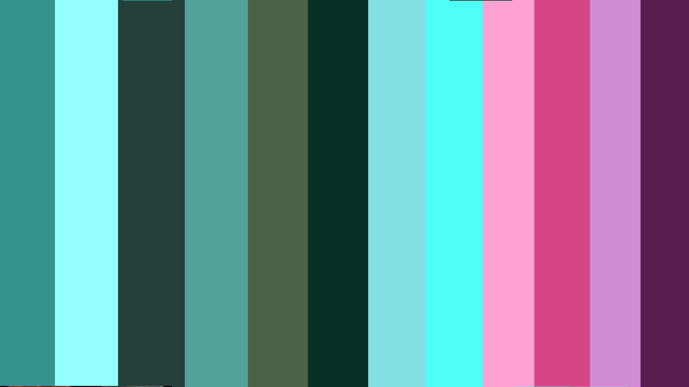
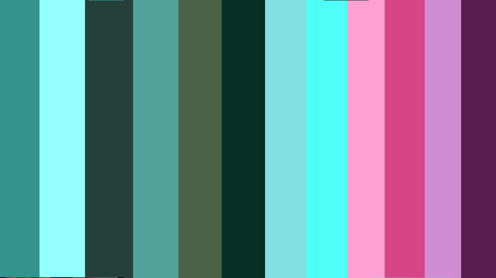

In the winter of 2022, I worked on a game titled Sprout and About, a gardening simulation in which the goal is to fill the garden with each type of plant. The player does so, by waiting for plants to wilt and then harvest them to receive mulch, allowing the player to grow more plants.
I made this game for a Game Jam in a Game Design class along side Owen Hellum and Joseph Boumerhi who handled the programing, sounds and additional 2D art.
This game was tricky to make because our professor challenged us to make a game without any text, meaning that we had to find creative ways to instruct people how to play. One of our solutions was to make a cutscene to introduce the context and goal of the game, and it was my job to make it.
We only had 3 weeks to work on the entire game, so I decided to make the cutscene an animatic to save time. I made a storyboard that I would share with classmates and friends to receive feedback to make sure that the story and goal of the game is clearly presented. I then made a new storyboard that I had both the previous people and new people review. Finally, I made each frame on GIMP and then made the video composition on Adobe Premiere Pro.


 
